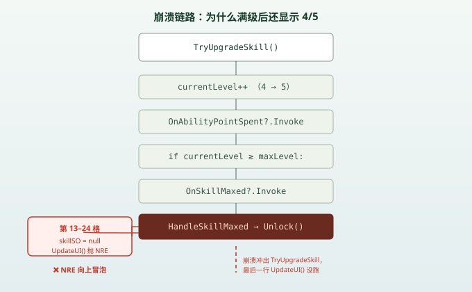

一句话说清这天的内容
Day 8 把技能面板画出来了——24 个空格子、0 个 Button。今天把它做出来：用一个 ScriptableObject（技能数据）+ 一个 SkillSlot（格子组件）+ 两个 Manager（点数与生效），让「点格子 → 扣点数 → 升级 → 亮起来 → 真的改变游戏」这一整条链路第一次跑通；然后被首轮联调爆出来的三个崩溃追着修了一整晚。
今天新增 4 个脚本、修改 0 个旧脚本（Day 1–8 的战斗 / 属性 / 经验逻辑一个没动）：SkillSO、SkillSlot、SkillTreeManager、SkillManager，外加一个早就存在、今天才接上开关的 ToggleSkillTree。
先说结论：为什么「能点」比「能看」难这么多
Day 8 那个面板之所以「看起来完成了」，是因为它只需要摆位置——纯 RectTransform，不依赖任何运行时数据。今天要的「能点」逼着你把三件 Day 8 刻意留白的事一次性补齐：
- 每个格子得有自己的数据：叫什么、几级满、用什么图标。
- 得有一个中央地点存「我还有几点」、以及「谁解锁了」。
- 「学一个技能」必须能反作用于游戏：加血量上限、或者把一开始锁死的战斗打开。
这三点里，第 3 点最容易被当成「顺手」——结果三个崩溃里有俩都在它身上。等会儿会看到：崩溃从来不在你写新逻辑的地方炸，而是在新逻辑第一次真正被触发的瞬间炸。
脚本关系
| 项 | 变化 |
|---|---|
SkillSO.cs | 新增 —— ScriptableObject：技能名 / 最大等级 / 图标 |
SkillSlot.cs | 新增 —— 单个格子的组件：升一级、是否解锁、两个静态事件 |
SkillTreeManager.cs | 新增 —— 持有全部 24 格、技能点、满级连锁解锁 |
SkillManager.cs | 新增 —— 订阅「花点数」事件，把技能映射成属性/战斗改动 |
ToggleSkillTree.cs | 早已存在，今天接上（开关面板 + Time.timeScale） |
StatsManger / Player_Combat / ExpManager | 全部未改，只是被新脚本引用 |
调用链（今天唯一新的一条主干）：
点击格子 Button → SkillTreeManager.Start 注册的监听 → CheckAvailablePoints → slot.TryUpgradeSkill() → ① 扣点数 + ② 满级连锁解锁 + ③ UpdateUI() 刷新 → SkillManager 把「学技能」接到属性/战斗
提示
这条链里有两个静态事件 OnAbilityPointSpent 和 OnSkillMaxed，挂在 SkillSlot 上。今天就是被这两个事件的订阅顺序和覆盖范围，坑了三次。下面的「账」会逐条拆。
一、24 个空格子 → 能点的 SkillSlot
1. SkillSO：技能的数据外壳
Day 8 的「Skill Point: 10」是写死在 TMP 里的占位符。今天的第一件事是给技能一个正经的数据类型：
[CreateAssetMenu(fileName ="NewSkill",menuName ="SkillTree/Skill")]
public class SkillSO : ScriptableObject
{
public string skillName;
public int maxLevel;
public Sprite skillIcon;
}三个字段正好对应 Day 8 面板缺的三样东西：skillName 是显示名、maxLevel 是「X/Y」里的那个 Y、skillIcon 是格子上那张图。关键在 ScriptableObject——它不挂在场景里，是项目资源（Project 里右键 SkillTree/Skill 就能建一个），所有格子共享同一份定义，改一处、全体生效。
2. SkillSlot：格子的灵魂
Day 8 的格子只有 RectTransform。今天给它挂上组件，让它同时具备「显示」和「行为」：
public class SkillSlot : MonoBehaviour
{
public List<SkillSlot> prerequisiteSkillSlots; // 前置依赖
public SkillSO skillSO; // 这份格子装哪个技能
public int currentLevel;
public bool isUnlocked;
public Image skillIcon;
public TMP_Text skillLevelText;
public Button skillButton;
public static event Action<SkillSlot> OnAbilityPointSpent; // 花了一点
public static event Action<SkillSlot> OnSkillMaxed; // 刚满级
public void TryUpgradeSkill()
{
if (isUnlocked && currentLevel < skillSO.maxLevel)
{
currentLevel++;
OnAbilityPointSpent?.Invoke(this);
if (currentLevel >= skillSO.maxLevel)
{
OnSkillMaxed?.Invoke(this);
}
UpdateUI(); // ← 最后才刷新自己
}
}
public bool CanUnlockSkill()
{
foreach (SkillSlot slot in prerequisiteSkillSlots)
{
if (!slot.isUnlocked || slot.currentLevel < slot.skillSO.maxLevel)
return false;
}
return true;
}
public void Unlock() { isUnlocked = true; UpdateUI(); }
private void UpdateUI()
{
skillIcon.sprite = skillSO.skillIcon;
skillLevelText.text = isUnlocked
? currentLevel + "/" + skillSO.maxLevel
: "Locked";
// ……颜色、按钮可点状态省略
}
}注意 TryUpgradeSkill 的结构：先改数据（currentLevel++），再广播事件，最后才 UpdateUI()。 这个顺序今天害我们吃了第一个大亏（见坑 1）。也注意两个事件是 static 的——意味着全场景所有 SkillSlot 共用同一对事件，谁订阅谁收，跟具体哪个格子无关。
3. SkillTreeManager：点数与解锁的中央
public class SkillTreeManager : MonoBehaviour
{
public SkillSlot[] skillSlots; // 场景里拖进来的 24 格
public TMP_Text pointsText;
public int availablePoints;
private void OnEnable()
{
SkillSlot.OnAbilityPointSpent += HandleAbilityPointsSpent;
SkillSlot.OnSkillMaxed += HandleSkillMaxed;
ExpManager.OnLevelUp += UpdateAbilityPoints;
}
private void OnDisable()
{
SkillSlot.OnAbilityPointSpent -= HandleAbilityPointsSpent;
SkillSlot.OnSkillMaxed -= HandleSkillMaxed;
ExpManager.OnLevelUp -= UpdateAbilityPoints;
}
private void Start()
{
foreach (SkillSlot slot in skillSlots)
slot.skillButton.onClick.AddListener(() => CheckAvailablePoints(slot));
UpdateAbilityPoints(0);
}
private void CheckAvailablePoints(SkillSlot slot)
{
if (availablePoints > 0) slot.TryUpgradeSkill();
}
private void HandleAbilityPointsSpent(SkillSlot skillSlot)
{
if (availablePoints > 0) UpdateAbilityPoints(-1);
}
private void HandleSkillMaxed(SkillSlot skillSlot)
{
foreach (SkillSlot slot in skillSlots)
if (!slot.isUnlocked && slot.CanUnlockSkill())
slot.Unlock();
}
}这里做对了最关键的一件事：事件订阅在 OnEnable 加、OnDisable 减，成对出现。静态事件不会随物体销毁自动退订，少一个 -= 就会在物体消失后还往里塞回调，下一次广播直接对空引用开火。今天这一版两个 -= 都在，是昨天那版踩过「OnDisable 写了 +=」之后修回来的。
HandleSkillMaxed 是「满级连锁解锁」：学满一个技能，自动把满足前置的其它格子点亮——这就是技能树「学 A 才解锁 B」的雏形。
4. SkillManager：把「学技能」接到游戏上
这是 Day 8 第十个洞（「升级仍然不给任何东西」）的真正消费者：
public class SkillManager : MonoBehaviour
{
public Player_Combat combat; // 注意：这个字段在 Inspector 里没挂
private void OnEnable() { SkillSlot.OnAbilityPointSpent += HandleAbilityPointSpent; }
private void OnDisable() { SkillSlot.OnAbilityPointSpent -= HandleAbilityPointSpent; }
private void HandleAbilityPointSpent(SkillSlot slot)
{
switch (slot.skillSO.skillName)
{
case "Max Health Boost":
StatsManger.Instance.UpdateMaxHealth(1);
break;
case "Sword Slash":
combat.enabled = true; // ← 学「挥砍」才把战斗打开
break;
default:
Debug.LogWarning("Error" + slot.skillSO.skillName);
break;
}
}
}设计意图很清楚：玩家开局不能攻击，得先去技能树点出「Sword Slash」，这行 combat.enabled = true 才把 Player_Combat 这个组件激活。逻辑很美，但今天就在「combat 到底挂没挂」上摔了一跤（见坑 2）。
二、今天翻出来的账：三个崩溃
首轮联调，刚点下第一个技能，Unity 控制台就红了三回。每一个都「不报错的时候一切正常，第一次真正触发才炸」。
坑 1：满级后 UI 卡在 4/5
现象：把一个技能从 4 级点满到 5 级，数据上 currentLevel 确实是 5，但格子上的文字死活停在 4/5。
根因：回到 TryUpgradeSkill，最后是这一句才刷新自己：
currentLevel++;
OnAbilityPointSpent?.Invoke(this); // 广播「花点」
if (currentLevel >= skillSO.maxLevel)
OnSkillMaxed?.Invoke(this); // 触发连锁解锁
UpdateUI(); // ← 这一行被「跳过」了OnSkillMaxed 的订阅者是 SkillTreeManager.HandleSkillMaxed，它会遍历全部 24 个格子，对「未解锁且满足前置」的调用 Unlock()。Unlock() 里第一行就是 UpdateUI()，而 UpdateUI() 第一行是：
skillIcon.sprite = skillSO.skillIcon; // skillSO 为 null 时这里直接 NRE场景里第 13–24 号格子在 Day 8 只是占位，skillSO 是 null。于是 HandleSkillMaxed 一遍历到它们，Unlock() → UpdateUI() 立刻抛 NullReferenceException。这个异常顺着调用栈一路冒泡，冲出 HandleSkillMaxed、冲出 TryUpgradeSkill，导致 TryUpgradeSkill 最后那句自己的 UpdateUI() 根本没执行——而它上一次刷新 UI 是在 currentLevel++ 之前，所以格子永远停在 4/5。
为什么给 13–24 号挂上 skillSO 就好了：崩溃源头就是那些 null 格子的 UpdateUI()。只要它们不再 null，HandleSkillMaxed 平静遍历完，异常不再抛，TryUpgradeSkill 末尾的 UpdateUI() 顺利执行，立刻刷成 5/5。

更稳的修法（挂占位 SO 只是止血）：
// 在 UpdateUI / CanUnlockSkill 里对 skillSO 判空
private void UpdateUI()
{
if (skillSO == null) return; // 没装技能的格子直接跳过
skillIcon.sprite = skillSO.skillIcon;
// ……
}
// 或者把 TryUpgradeSkill 的刷新提前到事件之前：
currentLevel++;
UpdateUI(); // 先刷自己
OnAbilityPointSpent?.Invoke(this); // 再广播，任凭下游炸都不影响本格前者是「下游防御」，后者是「先把本职工作做完再通知别人」——后者更治本：本格子的 UI 永远先刷新，连锁解锁就算炸了也不牵连它。
坑 2：SkillManager 第 25 行空引用
现象：点了名为「Sword Slash」的技能，控制台报 NullReferenceException: SkillManager.HandleAbilityPointSpent (SkillManager.cs:25)。
根因：SkillManager 里 public Player_Combat combat; 是个公开字段，靠 Inspector 拖引用赋值。今天新建脚本时忘了把 Player 物体拖进去，于是它一直是 null。而 HandleAbilityPointSpent 走到 case "Sword Slash" 这一支，执行的第一句就是：
combat.enabled = true; // combat 为 null → 第 25 行 NRE注意它只在这个分支炸：「Max Health Boost」那支走的是 StatsManger.Instance（单例，永远有），不会炸；只有「Sword Slash」这种需要外部引用组件的支线才会暴露 combat 没挂。
修法：
// 要么在 Inspector 把 Player（带 Player_Combat 的那个物体）拖到 combat 字段；
// 要么代码里拿，省得忘：
combat = combat ?? FindObjectOfType<Player_Combat>();
if (combat != null) combat.enabled = true;这条账的本质和坑 1 一样：公开字段依赖手动拖拽，漏一个就是运行时才发现的 null。 凡是 public Xxx foo; 又要在代码里 .foo 的，都该在 Awake/Start 里兜底查一次，或者干脆用 RequireComponent + 自动获取。
坑 3：Combat 初始禁用，却仍能砍出第一刀
现象：设计是「开局 Player_Combat.enabled = false，学了 Sword Slash 才开」。但实测进游戏、还没点技能，按攻击键第一刀能砍出去，之后就砍不动了。
根因：Unity 的 enabled = false 只停生命周期回调（Update / FixedUpdate / OnEnable），不阻止你直接调它的 public 方法。Player_Combat 的关键代码：
private float timer;
private void Update() // disabled 时这一行根本不跑
{
if (timer > 0) timer -= Time.deltaTime;
}
public void Attack()
{
if (timer <= 0) // ← 没有「if (!enabled) return」
{
anim.SetBool("isAttacking", true);
timer = cooldown; // timer 被设成 2
}
}Attack() 里只看了 timer，没看 enabled。开局 timer = 0，于是第一刀：timer <= 0 成立 → 放动画、timer 设成 2。但因为组件是禁用的，Update() 不执行，timer 永远停在 2，再按攻击键 timer <= 0 不成立 → 砍不动了。所以正好漏一刀。
调用 Attack() 的地方（PlayerMovement 的输入）当时是这么写的，才把这刀放出去：
if (Input.GetButtonDown("Slash") && player_Combat.enabled == true)
player_Combat.Attack();为什么必须加 && player_Combat.enabled == true：Attack() 自己不守门，那就只能在「调它之前」守门。没这个判断，第一刀在 timer 还是 0 的时候就出去了；加上之后，组件没启用时整句短路，一刀都放不出去，等 SkillManager 把 combat.enabled 设成 true，攻击才真正解锁。
技巧
更结实的写法是在 Attack() 内部守门：if (!enabled || timer > 0) return;。这样无论从哪调用都安全，不依赖调用方记得判 enabled——毕竟 Attack() 是 public，谁都能调。
三、整体设计思路
1. 数据用 ScriptableObject，逻辑用 MonoBehaviour，两件事分开
SkillSO 只描述「技能是什么」，不带任何运行行为；SkillSlot 才负责「这个格子怎么显示、怎么升级」。好处是：加一个新技能 = 在 Project 里右键新建一个 SkillSO + 往面板上拖一个 SkillSlot，不用改任何脚本。这是 Day 8 说的「留接口」真正兑现的样子。
2. 静态事件是把双刃剑
OnAbilityPointSpent / OnSkillMaxed 让「花点数」和「满级」这两个动作能广播给任意监听者（SkillTreeManager 扣点、SkillManager 生效），格子之间彻底解耦。但代价是：订阅范围 = 全场景，且必须手动 -=。
今天三个崩溃里，坑 1 和坑 2 的根都在这个「广播」语义上——广播会打到所有订阅者，任一订阅者内部有 null，整条链就崩。用静态事件时，脑子里得一直绷着一根弦：「这个事件现在所有谁在听？它们会不会因为某个字段没初始化而炸？」
3. enabled 不是「锁」，是「暂停心跳」
坑 3 是最反直觉的一条。组件禁用 ≠ 不能调它的方法，只是它的 Update 不再跳。所以「开局锁住战斗」这种需求，靠 enabled = false 是不够的，必须在入口处（或方法内部）再加一道显式守卫。今天是用输入处的 && enabled == true 兜住的，但更稳的是在 Attack() 内部守——因为方法是对外开放的。
4. 一整天里最该记住的一句话
崩溃不在你写新逻辑的地方炸，而在新逻辑第一次被真正触发的地方炸。 今天三个坑，没有一个是语法错、没有一个是 Editor 里能看出来的：它们全在「点下第一个技能」那一刻才暴露。静态事件没 -=、公开字段没拖引用、enabled 当锁用——这些「看起来能跑」的代码，只有跑到那条真实路径上才会翻脸。
明天要补的洞
HandleSkillMaxed缺防御：遍历 24 格时没有对skillSO判空，依赖「所有格子都挂了 SO」这个前提才不崩（今天的修法是挂占位，应该改成代码判空）。SkillManager.combat没有兜底：靠 Inspector 手动拖，漏了就是运行时 NRE；应在Awake里自动获取或判空。Attack()没有内部守卫：只靠调用方判enabled，改个调用点就会重新漏刀。ToggleSkillTree的变量名是statsCanvas：它实际控制的是技能面板的CanvasGroup，名字会误导三个月后的自己，该改名。- 技能树还是「扁平列表」：
prerequisiteSkillSlots虽然接上了，但场景里还没真正配置前置关系，两棵树之间也没连线。 StatsCanvas的 alpha 仍是 1、技能面板仍常显：Day 8 的坑 1、坑 6 还没真正写回Awake()。- 升级给点数这条线还没接：
ExpManager.OnLevelUp今天只被用来刷新显示，没真的skillPoint += 1。 SkillPoint: 10仍是硬编码：availablePoints现在是脚本里的初值，没跟ExpManager打通。
完整的九天进度、脚本清单、数值与问题分级，我另外整理成了一页：ARPG 开发进度总览。
一句话总结
今天把 Day 8 那 24 个空 RectTransform 变成了真能点的 SkillSlot：用 SkillSO（ScriptableObject）装技能数据、SkillTreeManager 管点数与「满级连锁解锁」、SkillManager 把「学技能」接到属性与战斗——整条「点格子 → 扣点 → 升级 → 变亮 → 真改游戏」第一次跑通；但首轮联调立刻暴露三个崩溃，且全在「第一次真正触发」时才炸：满级后 UI 卡 4/5 是因为 HandleSkillMaxed 遍历到 null 格子的 UpdateUI() 抛 NRE、把本该刷新自己的最后一步一起吞了；SkillManager 第 25 行空引用是因为 combat 字段忘了在 Inspector 挂；Combat 开局禁用却仍能砍第一刀，是因为 enabled = false 只停 Update、不挡 public 方法调用，Attack() 里没有 enabled 守卫。